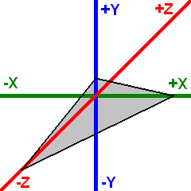

Scenes
A Scene contains all the objects to be rendered. It manages collections of renderables and light sources.
Renderables are objects that can be rendered by the engine, such as models, terrain, particle systems, or skyboxes.
Light sources illuminate renderables in the scene.
Cameras determines the perspective from which a scene is viewed. They define the position, orientation, and projection parameters.
A View represents a viewport with a specific scene and camera. The view handles rendering and can apply PostShaders to the final output. Multiple views can render the same scene with different cameras.
graph TD
Scene -- contains --> Renderables
Scene -- contains --> LightSources
View -- shows --> Scene
View -- uses --> Camera
Coordinate system
OmegaEngine uses a left-handed coordinate system (as used by DirectX) with the following default orientation:
- Positive X axis - Points to the right
- Positive Y axis - Points upward
- Positive Z axis - Points into the screen (away from the viewer)
The standard camera orientation is a view along the negative Z axis, looking into the positive Z direction.

Setup
Basic example of setting up a scene with a model and lighting:
var scene = new Scene
{
Positionables =
{
new Model(XMesh.Get(engine, "MyModel.x"))
},
Lights =
{
new DirectionalLight { Direction = new(-1, -1, 1), Diffuse = Color.White }
}
};
var camera = new FreeFlyCamera
{
Position = new(0, 10, -20)
};
var view = new View(scene, camera) { Lighting = true };
engine.Views.Add(view);